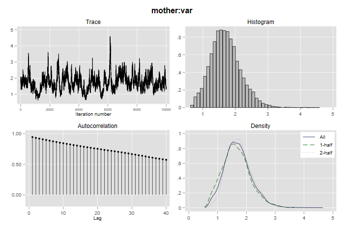

Stata 14 introduced the bayesmh command to fit Bayesian
models using the Metropolis-Hastings algorithm. This algorithm is not
ideally suited for fitting multilevel models, but the documentation
notes that “you can use it to fit some multilevel models that do not
have too many random effects” [BAYES, p. 183].
Version 14.1 added a reffects() option and the
possibility of using Gibbs sampling for the random effects, combined
with Metropolis-Hastings for the fixed effects. This results in a much
more efficient algorithm.
Let us try this command on the hospital delivery data previously analyzed with maximum likelihood, Gibbs sampling with BUGS, Gibbs sampling with JAGS, and Hamiltonian Monte Carlo with Stan. First we read the data
. infile hosp loginc distance dropout college mother /// > using https://grodri.github.io/datasets/hospital.dat, clear (1,060 observations read)
Next we run the model. My setup follows very closely the example in the Stata manual [BAYES, p. 199].
. set seed 81
. bayesmh hosp loginc distance dropout college, ///
> likelihood(logit) reffects(mother) ///
> prior({hosp:i.mother}, normal(0, {mother:var})) ///
> prior({hosp:loginc distance dropout college _cons}, normal(0,100)) ///
> prior({mother:var}, igamma(0.01, 0.01)) ///
> block({mother:var}, gibbs) dots
Burn-in 2500 aaaaaaaaa1000aaaaaaaaa2000aaaaa done
Simulation 10000 .........1000.........2000.........3000.........4000.........50
> 00.........6000.........7000.........8000.........9000.........10000 done
Model summary
──────────────────────────────────────────────────────────────────────────────
Likelihood:
hosp ~ logit(xb_hosp)
Priors:
{hosp:i.mother} ~ normal(0,{mother:var}) (1)
{hosp:loginc distance dropout college _cons} ~ normal(0,100) (1)
Hyperprior:
{mother:var} ~ igamma(0.01,0.01)
──────────────────────────────────────────────────────────────────────────────
(1) Parameters are elements of the linear form xb_hosp.
Bayesian logistic regression MCMC iterations = 12,500
Metropolis–Hastings and Gibbs sampling Burn-in = 2,500
MCMC sample size = 10,000
Number of obs = 1,060
Acceptance rate = .4727
Efficiency: min = .008289
avg = .01889
Log marginal-likelihood = -631.25985 max = .02528
─────────────┬────────────────────────────────────────────────────────────────
│ Equal-tailed
│ Mean Std. dev. MCSE Median [95% cred. interval]
─────────────┼────────────────────────────────────────────────────────────────
hosp │
loginc │ .5729408 .0710584 .00447 .5709049 .4459804 .7180456
distance │ -.0741501 .0335158 .002252 -.0738317 -.1406649 -.0089173
dropout │ -2.029001 .2269932 .014276 -2.028461 -2.470159 -1.581673
college │ 1.019903 .3777108 .029201 1.018706 .3340784 1.803458
_cons │ -3.443006 .4803279 .038467 -3.43306 -4.383174 -2.598306
─────────────┼────────────────────────────────────────────────────────────────
mother │
var │ 1.708702 .4761862 .052302 1.673327 .8714004 2.729173
─────────────┴────────────────────────────────────────────────────────────────
LIke most Stata estimation commands, we specify the outcome
hosp and the predictors
loginc distance dropout college, excluding the random
effects. The second line specifies the likelihood function which is
Bernoulli with link logit, and random effects at the mother
level using the option reffects(mother).
Next we specify the prior distributions. The random effects at the woman level are assumed to be normal with mean 0 and unspecified variance. All fixed effects are assumed to the normal with mean 0 and variance 100. Then we specify the hyperprior for the woman-level variance as an inverse gamma, equivalent to assuming that the precision is gamma with parameters 0.01 and 0.01.
The key specification is the last line, which defines the random effects as a separate block of parameters to be estimated using Gibbs sampling.
When you use the reffects() option Stata supresses
printing the random effects. An alternative is to use the
noshow option. You can also select exactly what to print
using the command bayesstats summary.
As you would expect from Stata, the Bayes estimation procedures have excellent graphic facilities. Here’s how to generate diagnostic plots for the variance parameter at the mother level:
. bayesgraph diagnostics {mother:var}
. graph export bayesmvar.png, width(700) replace
file bayesmvar.png saved as PNG format

The graph reveals “slow mixing” and high auto-correlation, which is a common occurrence with variance parameters, but a comparison of the first and second halves of the Markov chain is reassuring. Try running similar diagnostics for the other parameters.
A naive specification of the model would use i.mother
for the random effects, most likely after using
fvset base none mother to ensure that all units get a
random effect. Even if these parameters are specified as a separate
block you will have serious convergence problems, even though the model
is exactly the same. The Stata documentation notices a similar problem
with their example.
Here is a comparison of the four estimation methods we have used on the same data. (The Stata results quoted are from an earlier run using Stata 14, but are almost identical to the current results.)
| Variable | melogit | Gibbs | Stan | bayesmh |
|---|---|---|---|---|
| loginc | 0.562 | 0.569 | 0.581 | 0.573 |
| distance | -0.077 | -0.077 | -0.077 | -0.074 |
| dropout | -1.998 | -2.037 | -2.088 | -2.029 |
| college | 1.034 | 1.056 | 1.094 | 1.020 |
| constant | -3.370 | -3.415 | -3.488 | -3.443 |
| s2 | 1.548 | 1.532 | 1.918 | 1.709 |
We note general agreement, as all procedures would lead us to the same conclusions.